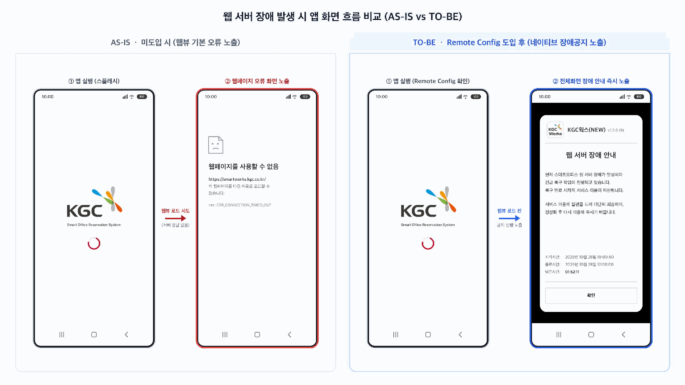

REMOTE CONFIG장애 상황에서도,
장애 상황에서도,
안내는 먼저 전달되도록
웹 서버 장애 발생 시 앱 화면 흐름을 비교해 보세요.
→
Remote Config 확인
웹페이지를 사용할 수 없음
https://smartworks.kgc.co.kr/
서버 응답이 없어 웹페이지를
불러올 수 없습니다.
net::ERR_CONNECTION_TIMED_OUTKGC웍스(NEW)v1.0.6 (9) · 시연 예시
웹 서버 장애 안내
현재 스마트오피스 웹 서버 장애가 발생하여 긴급 복구 작업이 진행되고 있습니다.
복구 완료 시까지 서비스 이용이 제한됩니다.
서비스 이용에 불편을 드려 대단히 죄송하며, 정상화 후 다시 이용해 주시기 바랍니다.
- 시작시간
- 2026.10.28 10:00:00
- 종료시간
- 2026.10.28 12:00:00
- 남은시간
- 01:52:11 (예시)
장애 안내를 확인했습니다
여기까지가 장애 공지 시연입니다.
다시 시연하려면 아래 버튼을 눌러 주세요.
실제 서버 연결 없이 동작하는 화면 시연입니다. 공지·버전·시간은 예시입니다.
TO-BE · 도입 후웹뷰 로드 전에
웹뷰 로드 전에
장애 공지를 먼저 안내
앱 실행 시 Remote Config를 확인하고, 웹페이지 대신 앱의 장애 안내 화면을 표시합니다.
앱 실행→Remote Config 확인→전체화면 장애 안내
1단계 · 앱 실행 후 Remote Config를 확인합니다.
무엇이 달라지나요?
구분AS-ISTO-BE
확인 시점웹뷰 로드 시도웹뷰 로드 전
장애 화면웹뷰 기본 오류앱 장애 공지
사용자 안내연결 오류 표시장애 사유·복구 시간
문서 원본 흐름도 보기
웹 서버 장애 발생 시 앱 화면 흐름 비교 (AS-IS vs TO-BE)

앱 설치·업데이트 흐름 비교
첨부 화면으로 기존 APK 직접 설치와 Play 인앱 업데이트 흐름을 함께 확인하세요. 이미지를 누르면 확대됩니다.